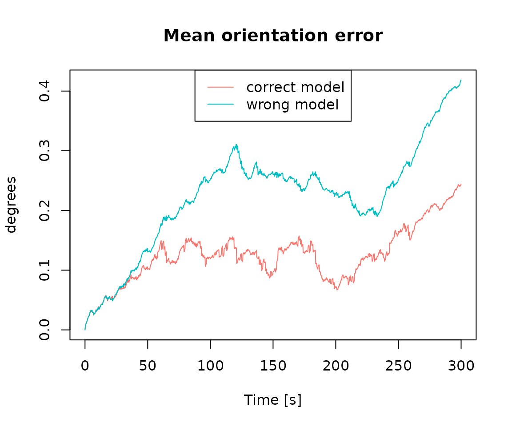
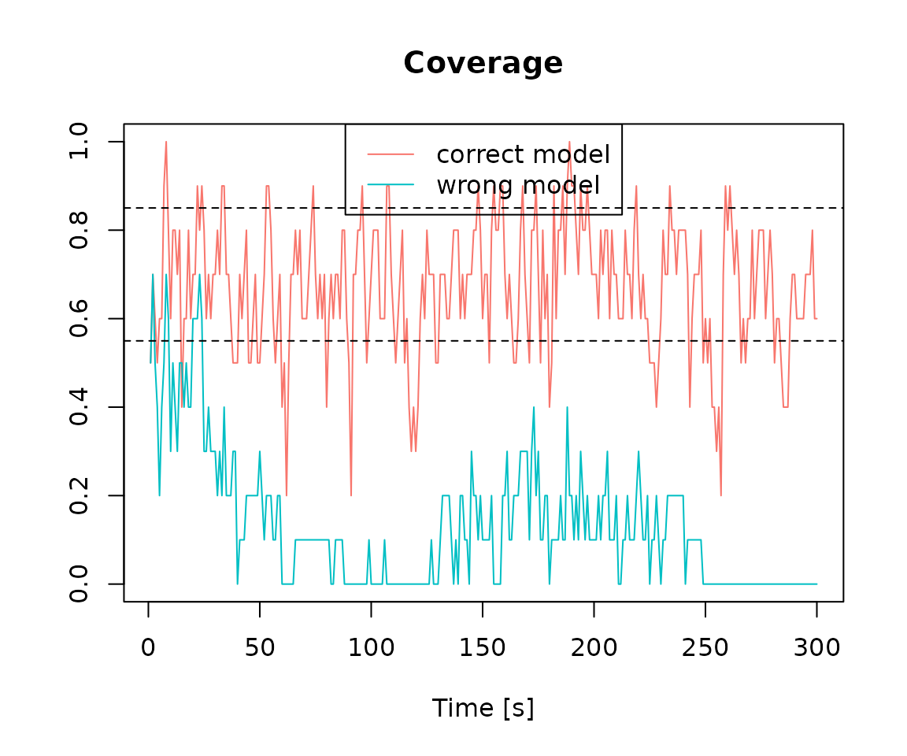

We load the R package navigation
library(navigation)We load the data lemniscate_traj_ned
data("lemniscate_traj_ned") # trajectory in proper format as shown bellow
head(lemniscate_traj_ned)## t x y z roll pitch_sm yaw
## [1,] 0.00 0.00000000 0.00000000 0 0.0000000000 0.000000e+00 0.7853979
## [2,] 0.01 0.05235987 0.05235984 0 0.0001821107 8.255405e-05 0.7853971
## [3,] 0.02 0.10471968 0.10471945 0 0.0003642249 1.650525e-04 0.7853946
## [4,] 0.03 0.15707937 0.15707860 0 0.0005463461 2.474976e-04 0.7853905
## [5,] 0.04 0.20943890 0.20943706 0 0.0007284778 3.298918e-04 0.7853847
## [6,] 0.05 0.26179819 0.26179460 0 0.0009106235 4.122374e-04 0.7853773We make the trajectory object
traj = make_trajectory(data = lemniscate_traj_ned, system = "ned")
class(traj)## [1] "trajectory"We then define a timing object
timing = make_timing(nav.start = 0, # time at which to begin filtering
nav.end = 300,
freq.imu = 100, # frequency of the IMU, can be slower wrt trajectory frequency
freq.gps = 1, # gnss frequency
freq.baro = 1, # barometer frequency (to disable, put it very low, e.g. 1e-5)
gps.out.start = 260, # to simulate a GNSS outage, set a time before nav.end
gps.out.end = 300)We define the sensor model for generating sensor errors.
snsr.mdl=list()
acc.mdl = WN(sigma2 = 5.989778e-05) + AR1(phi = 9.982454e-01, sigma2 = 1.848297e-10) + AR1(phi = 9.999121e-01, sigma2 = 2.435414e-11) + AR1(phi = 9.999998e-01, sigma2 = 1.026718e-12)
gyr.mdl = WN(sigma2 = 1.503793e-06) + AR1(phi = 9.968999e-01, sigma2 = 2.428980e-11) + AR1(phi = 9.999001e-01, sigma2 = 1.238142e-12)
snsr.mdl$imu = make_sensor(name="imu", frequency=timing$freq.imu, error_model1=acc.mdl, error_model2=gyr.mdl)We define the stochastic model for the GPS errors considering a RTK-like GNSS system
gps.mdl.pos.hor = WN(sigma2 = 0.025^2)
gps.mdl.pos.ver = WN(sigma2 = 0.05^2)
gps.mdl.vel.hor = WN(sigma2 = 0.01^2)
gps.mdl.vel.ver = WN(sigma2 = 0.02^2)
snsr.mdl$gps = make_sensor(name="gps", frequency=timing$freq.gps,
error_model1=gps.mdl.pos.hor,
error_model2=gps.mdl.pos.ver,
error_model3=gps.mdl.vel.hor,
error_model4=gps.mdl.vel.ver)We define the stochastic model for the barometer
baro.mdl = WN(sigma2=0.5^2)
snsr.mdl$baro = make_sensor(name="baro", frequency=timing$freq.baro, error_model1=baro.mdl)We then define the stochastic model for the sensor error, here we configure the EKF to have the same model as for data generation (ideal setup).
KF.mdl = list()
KF.mdl$imu = make_sensor(name="imu", frequency=timing$freq.imu, error_model1=acc.mdl, error_model2=gyr.mdl)
KF.mdl$gps = snsr.mdl$gps
KF.mdl$baro = snsr.mdl$baroWe then define a wrong model with respect to the data generation process (only composed of the white noise part)
wrong_acc.mdl = WN(sigma2 = 5.989778e-05)
wrong_gyr.mdl = WN(sigma2 = 1.503793e-06)
wrong_KF.mdl = list()
wrong_KF.mdl$imu = make_sensor(name="imu", frequency=timing$freq.imu, error_model1=wrong_acc.mdl, error_model2=wrong_gyr.mdl)
wrong_KF.mdl$gps = snsr.mdl$gps
wrong_KF.mdl$baro = snsr.mdl$baroWe perform the navigation Monte Carlo simulation considering the correct stochastic model.
num.runs = 10 # number of Monte-Carlo simulations
res = navigation(traj.ref = traj,
timing = timing,
snsr.mdl = snsr.mdl,
KF.mdl = KF.mdl,
num.runs = num.runs,
noProgressBar = TRUE,
PhiQ_method=2,
parallel.ncores=1,
P_subsampling = timing$freq.imu) # keep one covariance every secondWe perform the navigation Monte Carlo simulation considering the wrong stochastic model.
wrong_res = navigation(traj.ref = traj,
timing = timing,
snsr.mdl = snsr.mdl,
KF.mdl = wrong_KF.mdl, # < here the model is the wrong one
num.runs = num.runs,
noProgressBar = TRUE,
PhiQ_method=2,
parallel.ncores=1,
P_subsampling = timing$freq.imu) # keep one covariance every secondWe compute statistics on navigation performance for the navigation simulation that considered the correct stochastic model and for the navigation simulation that considered the wrong stochastic model.
pe_res = compute_mean_position_err(res, step = 25)
pe_wrong_res = compute_mean_position_err(wrong_res, step = 25)
oe_res = compute_mean_orientation_err(res, step = 25)
oe_wrong_res = compute_mean_orientation_err(wrong_res, step = 25)nees = compute_nees(res, step = timing$freq.imu)
wrong_nees = compute_nees(wrong_res, step = timing$freq.imu)
coverage = compute_coverage(res, alpha = 0.7, step = timing$freq.imu)
wrong_coverage = compute_coverage(wrong_res, alpha = 0.7, step = timing$freq.imu)We compare results
plot(pe_res, pe_wrong_res, legend=c("correct model", "wrong model"))plot(oe_res, oe_wrong_res, legend=c("correct model", "wrong model"))
plot(nees, wrong_nees, legend=c("correct model", "wrong model"))plot(coverage, wrong_coverage, legend=c("correct model", "wrong model"))